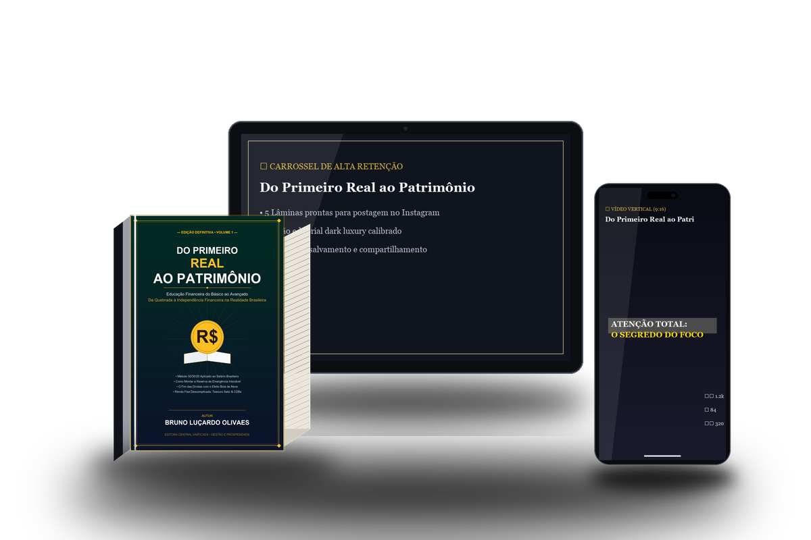

Educação Financeira do Básico ao Avançado & Emancipação Popular
O guia definitivo de 391 páginas para estancar o ralo financeiro, sair das dívidas e construir patrimônio sólido — sem jargões de Faria Lima e com os pés na realidade do trabalhador brasileiro.

O GRANDE DIFERENCIAL DO PROJETO
Por que uma obra de 391 páginas — que no mercado tradicional custaria entre R$ 150 e R$ 300 — é vendida a R$ 14,90? Porque ela é o motor que financia a informação de quem mais precisa.
A The Visão Informação (TVIN) nasceu com um propósito inegociável: fornecer educação econômica, ferramentas financeiras e jornalismo sem filtro para a base popular. Não vendemos ilusão nem promessas fáceis: entregamos dados limpos, matemática dos fatos e soberania para quem acorda cedo e faz o país girar.
Um jornal físico de 8 páginas, impresso em papel autêntico e diagramação profissional, distribuído 100% de graça em estações de trem, terminais de ônibus, feiras e praças populares. Ele traduz juros, direitos trabalhistas, inflação dos alimentos e orçamento familiar direto na mão de quem não tem tempo a perder.
Você não está apenas comprando um livro: está ativando uma engrenagem de emancipação coletiva. Cada venda do livro digital gera margem líquida suficiente para bancar a gráfica e a distribuição física de 3 exemplares do Jornal REAL da Rua entregues na ponta.
Você adquire o livro master completo (391 páginas) com acesso vitalício e todos os 4 bônus exclusivos.
Descontadas as taxas operacionais, R$ 9,00 vão direto e com total transparência para o fundo de impressão do jornal.
A um custo gráfico de ~R$ 3,00 por exemplar, três pessoas na correria da rua recebem informação financeira de qualidade de graça.
O DIAGNÓSTICO DO RALO FINANCEIRO
A maioria das pessoas não passa aperto porque ganha pouco: passa aperto porque o sistema bancário foi desenhado para drenar cada centavo que sobra através de juros invisíveis e falta de método.
Pagar o mínimo da fatura do cartão ou entrar no cheque especial é transferir o trabalho do seu mês inteiro diretamente para o lucro dos maiores bancos do país. O livro ensina a estancar essa hemorragia em menos de 15 dias.
Mandar você "cortar o cafezinho de R$ 5" enquanto o aluguel sobe e o custo da cesta básica dispara é piada de mau gosto. Nós ensinamos a metodologia do Orçamento 70/20/10 adaptada para quem ganha de 1 a 3 salários mínimos.
Deixar o dinheiro na poupança perde para a inflação real. Mas arriscar em apostas, tigrinhos ou criptomoedas milagrosas destrói famílias. O livro mostra o caminho seguro: Tesouro Direto, CDBs de liquidez diária e dividendos de empresas sólidas.
CONTEÚDO PROGRAMÁTICO COMPLETO
Uma obra enciclopédica de 391 páginas construída passo a passo, do primeiro centavo até a blindagem do patrimônio:
Mapeamento de dívidas, a auditoria do ralo invisível, a separação entre desejo e necessidade e o fim definitivo da dependência do crédito emergencial.
Como distribuir a renda para sobreviver com dignidade (70%), quitar pendências e poupar (20%) e manter lazer essencial (10%) sem sabotar o futuro.
O escudo de emergência que destrói a ansiedade noturna. Onde guardar a reserva para render todo dia com segurança e liquidez imediata.
Tesouro Selic, Tesouro IPCA+, CDBs garantidos pelo FGC e títulos de crédito. Como fazer o dinheiro trabalhar para você enquanto você dorme.
Ações de empresas perenes (bancos, energia, saneamento), Fundos Imobiliários geradores de "aluguel mensal na conta" e estratégia de dividendos simples.
O poder dos juros compostos ao longo de 10, 20 e 30 anos. Blindagem contra golpes, proteção patrimonial e transferência de soberania entre gerações.
RIGOR CONCEITUAL & PRÁTICA POPULAR
O livro sintetiza princípios testados no mercado financeiro global e adaptados à realidade da classe trabalhadora, com referências conceituais e homenagens a grandes comunicadores:
KIT COMPLETO DE ACELERAÇÃO
Ao adquirir o livro nesta condição especial de lançamento, você recebe na hora o pacote completo de ferramentas práticas:
O arquivo completo em alta definição do jornal físico de 8 páginas para você ler, imprimir ou compartilhar na sua comunidade.
Modelo pronto para Excel e Google Sheets. Basta digitar a sua renda para ela calcular instantaneamente seus tetos de gastos e aportes.
O roteiro passo a passo para fazer dinheiro rápido e honesto através de renda ativa e blindar a sua primeira reserva de emergência.
O roteiro exato para negociar com bancos pelo Desenrola Brasil ou Serasa Limpa Nome com até 90% de desconto real.
391 Páginas Técnicas + 4 Bônus Exclusivos + Patrocínio Direto de 3 Jornais Físicos nas Ruas.
PERGUNTAS FREQUENTES
Assim que seu pagamento de R$ 14,90 for confirmado pela Kiwify (instantâneo no PIX e Cartão), você recebe um e-mail com seus dados de acesso para baixar o pacote completo imediatamente.
Da sua compra de R$ 14,90, descontadas as taxas da plataforma, R$ 9,00 limpos vão para o caixa gráfico do Jornal REAL da Rua. Cada exemplar físico custa aproximadamente R$ 3,00 de gráfica. Portanto, a cada 1 livro vendido, 3 jornais são impressos e distribuídos gratuitamente para trabalhadores, jovens e moradores da periferia.
Para os dois. O Módulo I e II focam exatamente em quem está no vermelho, ensinando a estancar juros abusivos e organizar o orçamento. Já os Módulos IV, V e VI ensinam a multiplicar patrimônio em Tesouro Direto, Ações e Fundos Imobiliários.
Você tem 7 dias de garantia incondicional assegurada pela Kiwify e pelo Código de Defesa do Consumidor. Se não ficar satisfeito, basta um clique dentro da Kiwify para receber 100% do seu dinheiro de volta.